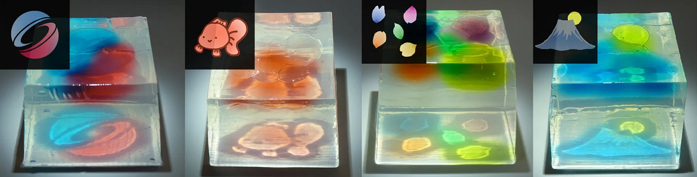

Edible Chromatic Caustics: Designing Colored Caustics of Jelly via Differentiable Rendering
Daiki Inokoshi, Takashi Ijiri
Shibaura Institute of Technology
SIGGRAPH Asia 2025 Posters

Abstract.
Transparent jellies create caustic patterns on the surface beneath them by refracting light.
Prior work designed jelly shapes that generate desired caustic patterns, but did not support colored caustics.
This study aims to create jellies with a desired colored caustic pattern.
We propose a two-step optimization process using a differentiable renderer (Mitsuba 3):
we first optimize the surface shape of a transparent base jelly to control the caustic intensity,
and then optimize the geometry and color of colored jelly inclusions embedded in the base jelly to provide color to the caustics.
After the optimization, we fabricate a jelly mold comprising an outer cavity and inner cores using a 3D printer, and create the jelly with the mold.
The proposed method enables the creation of jellies with various colored caustic patterns, providing novel culinary experiences.
@inproceedings{Inokoshi2025,
author = {Inokoshi, Daiki and Ijiri, Takashi},
title = {Edible Chromatic Caustics: Designing Colored Caustics of Jelly via Differentiable Rendering},
booktitle = {SIGGRAPH Asia 2025 Posters},
series = {SA Posters '25},
year = {2025},
publisher = {Association for Computing Machinery},
doi = {10.1145/3757374.3771517}
}